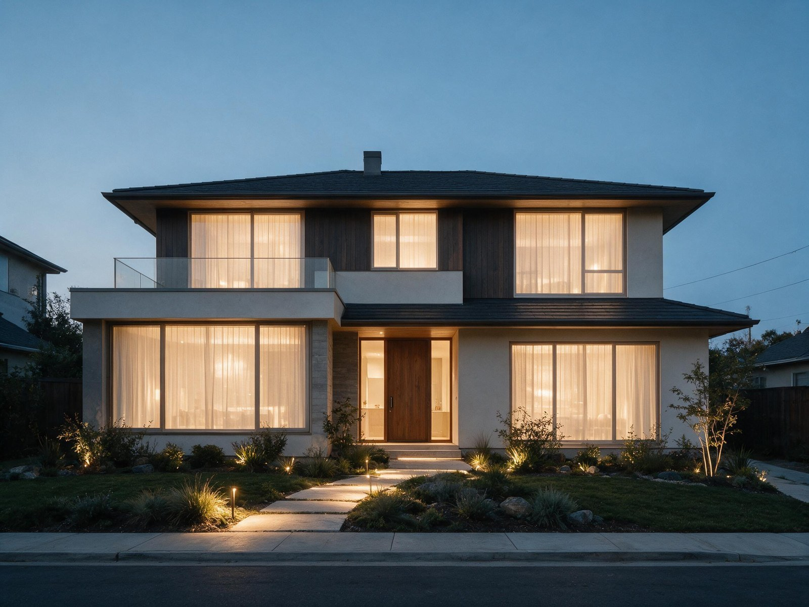

By the Editorial Team | Published: August 2026 | Last Updated: August 2026
The Compressor Class Is the Decision That Sets Everything Else
Residential central air conditioning comes in three equipment classes, and they behave differently enough that picking the wrong one produces predictable comfort and cost problems for the next 12 to 15 years. The classes are single-stage, two-stage, and variable-speed (also called inverter-driven). Each refers to how the outdoor compressor modulates capacity, and that single specification cascades into humidity control, cycling behavior, indoor sound level, and seasonal energy use. Understanding the three classes on their own terms is the difference between an equipment order that fits the house and one that survives on the strength of the installer's habits.
This primer walks through what each equipment class actually does, where each one fits, and how the choice interacts with the local climate, the building envelope, and the operating budget. It follows the technology rather than the marketing categories, and it treats the compressor as the defining component because everything downstream of the compressor, including the indoor coil, the airflow, and the thermostat control logic, is sized to what the compressor can and cannot do.
What a Single-Stage Compressor Actually Does
A single-stage compressor runs at one fixed speed whenever it is on, and it is off the rest of the time. Cooling capacity delivered to the house is either 100 percent of nameplate or zero, and the thermostat controls the split by cycling the compressor on and off. This is the traditional residential AC design and remains the least expensive equipment class to purchase and install.
Single-stage equipment fits a specific set of conditions well. Dry climates where sensible load dominates and latent load is a small fraction of total load, small homes with modest cooling requirements, and budget-constrained projects where a lower purchase price outweighs the operating cost premium all favor single-stage. It also has the simplest service profile: fewer electronics, well-understood failure modes, and the widest technician familiarity across markets.
Two-Stage Compressors as the Middle Ground
A two-stage compressor runs at approximately 65 percent capacity most of the time and steps up to 100 percent when the thermostat asks for more capacity during peak conditions. Under typical conditions the system delivers cooling in longer, gentler cycles at the lower stage, which improves humidity removal and reduces indoor temperature swing compared with single-stage. When outdoor temperature climbs on a design day, the compressor shifts to full capacity to keep up with the load.
Two-stage sits between single-stage and variable-speed on almost every axis: cost, complexity, humidity control, and seasonal energy use. It is often the right pick for mixed climates and average-size homes where the budget cannot support variable-speed but the operating pattern of single-stage would be uncomfortable. Most two-stage residential systems land in the 15 to 18 SEER2 range depending on the coil match.

Variable-Speed Systems and Continuous Modulation
A variable-speed (also called inverter-driven) compressor modulates its speed continuously between roughly 25 percent and 100 percent of nameplate capacity, matching output to the current load in real time. Instead of cycling on and off, the system runs almost continuously at whatever capacity the house needs, ramping up when solar gain peaks and ramping down as evening cools the load. The compressor is driven by a variable-frequency drive that changes electrical frequency to change compressor RPM, which changes refrigerant mass flow, which changes delivered capacity.
The operational profile is fundamentally different from single-stage or two-stage. Long, low-capacity runs keep the indoor coil cold and moisture removal continuous, which is why variable-speed dominates the equipment recommendations in hot-humid climates. The trade-off is first cost (typically 40 to 80 percent above a matched single-stage installation) and control-system complexity. The technology deep-dive on how variable-speed AC systems compare to single-stage equipment for hot climates walks through the specific ways the modulation pattern changes indoor comfort in Gulf Coast conditions.
Why Modulation Matters Beyond Efficiency
Variable-speed advertising leans heavily on SEER2 efficiency ratings, but the operational advantage is really about part-load performance. Real houses spend most of the cooling season at 20 to 60 percent of design load, not at design load. A single-stage unit sized for design conditions runs at 100 percent capacity for 20 minutes then off for 40 minutes across those mild days; a variable-speed unit sized for the same conditions runs at 30 percent capacity almost continuously and dehumidifies the whole time. The difference at the thermostat is small, but the difference in humidity, temperature evenness across rooms, and indoor sound level is significant.
How the Three Classes Compare Directly
| Attribute | Single-stage | Two-stage | Variable-speed |
|---|---|---|---|
| Capacity modulation | 100 percent or off | ~65 percent low / 100 percent high | ~25 to 100 percent continuous |
| Cycles per hour (mild day) | 5 to 8 | 2 to 4 | Nearly continuous run |
| Indoor humidity control | Limited | Good | Excellent |
| Typical SEER2 range | 13.4 to 15 | 15 to 18 | 18 to 26 |
| First cost (relative to single-stage) | Baseline | +15 to +30 percent | +40 to +80 percent |
| Best climate fit | Dry climates, small load | Mixed climates | Hot-humid climates, high-performance homes |
| Service ecosystem | Widest technician familiarity | Broad | Narrower, growing |
Frequently Asked Questions
Is single-stage equipment obsolete?
Single-stage equipment is not obsolete and still ships in large volumes for reasons other than technology. Small dry-climate homes with modest cooling loads, rental properties where first cost matters most, and installations in regions with limited technician support for inverter drives all favor single-stage. The equipment class has genuine trade-offs but it fits real conditions. The mistake is defaulting to single-stage when the climate or the home's performance profile actually calls for something else.
How much of the difference between classes is real versus marketing?
The nameplate SEER2 differences overstate real-world savings because SEER2 is a laboratory rating at fixed conditions, not a seasonal field metric. The differences that matter in service are humidity control (large and easy to notice), indoor temperature evenness room to room (moderate), and indoor sound level (variable). Two-stage produces most of the humidity benefit of variable-speed at a fraction of the cost premium; variable-speed adds sound-level and temperature-evenness gains on top. The efficiency alone rarely justifies the top-tier equipment; the comfort profile often does.
Does a variable-speed system pay back through energy savings alone?
Rarely, in isolation. The energy savings on a variable-speed unit over a two-stage unit in a mixed climate typically take 8 to 12 years to recover the first-cost premium, which is longer than most homeowners hold their equipment. The economic case for variable-speed strengthens in hot-humid climates (where the alternative is a dehumidifier plus AC), in high-performance homes with low envelope loads (where modulation matches the small load better), and in homes where indoor comfort quality carries real value to the occupants.
Can two-stage equipment be treated as a compromise pick?
Two-stage equipment is often the correct pick rather than a compromise. In mixed climates (IECC Zones 3, 4, and 5) with average-quality envelopes, two-stage produces most of the comfort improvement of variable-speed at 15 to 30 percent of the price premium. The two-stage class is under-recommended relative to how well it fits the majority of the U.S. residential market. Operators who default to either single-stage or variable-speed skip past the middle option that would have served most jobs better.
What is the service life difference between the three classes?
Manufacturer expected service life at typical duty cycles runs 12 to 15 years for single-stage, 12 to 17 years for two-stage, and 15 to 20 years for variable-speed under matched conditions. The extra headroom for variable-speed comes from lower cycling counts (which stress compressor starts) and gentler run patterns. Real service life is more sensitive to installation quality and maintenance than to compressor class, but the class ranking holds across large fleets.
How does thermostat compatibility change across classes?
Single-stage systems accept any standard 24-volt thermostat and run reliably with basic on-off logic. Two-stage systems require a two-stage-compatible thermostat that can call for low and high stages separately. Variable-speed systems typically require the manufacturer's communicating thermostat or a compatible third-party controller that supports the modulation protocol; a generic thermostat degrades a variable-speed system to on-off operation and defeats the reason to buy it.
Do heat pumps follow the same three-class breakdown?
Heat pumps follow the same three compressor classes as straight-cool AC (single-stage, two-stage, variable-speed) and the class trade-offs carry over almost identically. The variable-speed advantage grows for heat pumps because heating loads sit at low capacity for most of the season, exactly where inverter modulation performs best. Cold-climate heat pumps are almost always variable-speed for this reason.

How much of the compressor class decision should be left to the installer?
The class decision is a design decision, not an installation decision, and it should be made after a Manual J load calculation and a climate-appropriate Manual S selection. Installers default to what they carry in stock, which tends toward single-stage in cost-sensitive markets and toward the manufacturer they represent in premium markets. Homeowners who ask specifically about compressor class trade-offs get better outcomes than homeowners who accept the default recommendation.
